visión por computador · sjk002 · parcial
Lab 4: bordes y contornos
Sobel, Canny y Hough: cada función, cada parámetro y lo que devuelve, para escribirlo sin ordenador.
p4.py · cabecera
Qué se importa y de dónde
| Línea del código | Qué aporta | Dónde se usa |
|---|---|---|
from scipy.ndimage import sobel | derivada de Sobel por eje | testSobel |
from skimage import feature | feature.canny: detector de Canny | testCanny |
from skimage.transform import hough_line, hough_line_peaks | acumulador de Hough y búsqueda de picos | testHough, findPeaks |
from scipy import ndimage as ndi | ndi.rotate (y ndi.convolve en el ej. 4.1) | bRotate |
import numpy as np | np.hypot, np.arctan2, np.linspace, np.histogram | magnitud, HOG, ángulos |
from PIL import Image | abrir la imagen y pasarla a gris con .convert('L') | doTests |
probabilistic_hough_line. Es la pista del ejercicio 6 (segmentos en lugar de rectas infinitas).p4.py · doTests
Ruido, rotación y parámetros
if bRotate:
im = ndi.rotate(im, 15, mode='nearest')
if bAddNoise:
im = im + np.random.normal(
loc=0, scale=5, size=im.shape)
params['sigma'] = 5 # Canny y Hough
im pasa de uint8 a float64.reshape=True, el lado pasa de 256 a \(\lceil 256(\cos\alpha+\sin\alpha)\rceil\): 314 con 15° y 350 con 30° (comprobado).| parámetro | qué es |
|---|---|
| angle | grados; positivo = giro antihorario en pantalla |
| reshape | True (defecto): la salida crece para contener la imagen girada entera |
| order | orden de la spline (3 por defecto). 0 = vecino más próximo |
| mode | qué poner en el relleno: 'constant' (cval = 0, esquinas negras) o 'nearest' (repite el borde) |
testSobel · gx = sobel(im, 1)
Ficha: sobel
| parámetro | qué es |
|---|---|
| input | array 2D. Trampa: el resultado tiene su mismo dtype |
| axis | 1: deriva a lo largo de las columnas (en x) y marca bordes verticales. 0: deriva en y y marca bordes horizontales |
| mode | cómo se extiende la imagen en el borde (siguientes diapositivas) |
| cval | valor del relleno si mode='constant' |
| devuelve | derivada con signo: no es una magnitud |
Sobel = derivada \([-1,0,1]\) en el eje elegido × suavizado \([1,2,1]\) en el otro:
uint8 el resultado también es uint8: los negativos se envuelven y el resultado se corrompe. Convierte antes: im.astype(float).ejercicio 1 · pregunta del enunciado
El gris de Sobel
Gris medio = 0: no hay cambio de intensidad en esa dirección.
Claro = positivo: la intensidad sube al avanzar por el eje (de oscuro a claro).
Oscuro = negativo: la intensidad baja al avanzar por el eje.
sobel(im, 1) se avanza hacia la derecha, en sobel(im, 0) hacia abajo. Para ver «gris medio = 0» hay que mostrar con límites simétricos (vmin=-m, vmax=m).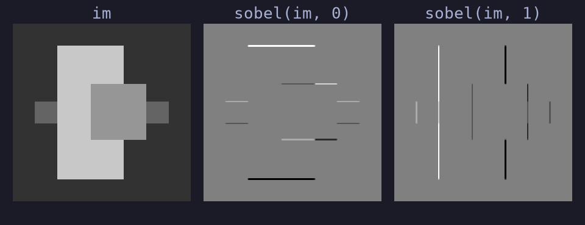
cuadros.png (resultado real, en float)
cuadros.png · fila 128 · resultado real
Un borde en 1D
Arriba, los niveles de gris de la fila 128; abajo, sobel(im, 1) en esa fila.
Zona plana ⇒ 0. Solo hay respuesta en los saltos, y ocupa 2 píxeles (el núcleo mide 3).
100 → 200 (sube): +400. 200 → 150 (baja): −200.
comprobado con convolve y correlate
sobel(im, 1) es una correlación
np.abs(sobel(f,1) - correlate(f,Kx)).max() = 0; con convolve(f,Kx) es el signo contrario (diferencia 1200 en cuadros). La última columna (−30) es un efecto del relleno con ceros.bloque b · ejercicio 1 y 4.1
Ejercicios de Sobel
gx, gy y magnitud; binarizar; el ruido; el parámetro mode y Sobel escrito con convolve.
ejercicio 1 · testSobel ampliado
gx, gy y magnitud
def testSobel(im, params=None):
im = im.astype(float)
gx = sobel(im, 1) # bordes verticales
gy = sobel(im, 0) # bordes horizontales
mag = np.hypot(gx, gy) # = np.sqrt(gx**2 + gy**2)
return [gx, gy, mag]
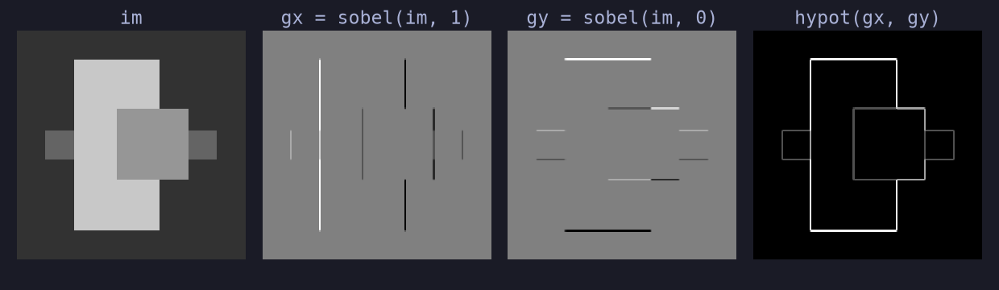
cuadros.png: en gx solo se ven líneas verticales; en gy, horizontales
ejercicio 1 · dirección del gradiente
¿Se adivina la dirección?
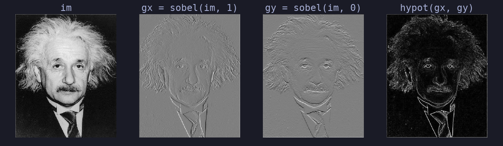
einstein.pgm (el enunciado usa lena, que no está en la carpeta del lab)
Sí. En gx destacan las estructuras verticales (contorno de la cara, cuello de la camisa); en gy, las horizontales (cejas, boca, hombros). La magnitud hypot(gx, gy) las reúne: no tiene signo, así que ya no se sabe hacia dónde sube la intensidad.
NumPy · módulo y ángulo
Fichas: hypot y arctan2
con y hacia abajo, θ > 0 gira en sentido horario en pantalla. El borde es ⟂ al gradiente.
| devuelve | \(\sqrt{x_1^2+x_2^2}\) elemento a elemento, siempre ≥ 0 |
| ventaja | igual que np.sqrt(gx**2+gy**2), sin desbordar |
| x1, x2 | primero la y, luego la x: np.arctan2(gy, gx) |
| devuelve | radianes en \((-\pi,\pi]\), con el cuadrante correcto |
| caso nulo | arctan2(0, 0) = 0: los planos caen en 0 |
np.arctan(gy/gx) divide por cero si gx = 0 y solo da \((-\pi/2,\pi/2)\): pierde el sentido. Usa arctan2(gy, gx); para grados, np.rad2deg.ejercicio 1 · aproximación de la magnitud
|gx|+|gy| frente a hypot
ejercicio 1 · mapa binario de bordes
Binarizar la magnitud
mag = np.hypot(gx, gy) ap = np.abs(gx) + np.abs(gy) edges1 = mag > t * mag.max() edges2 = ap > t * mag.max()
Con el mismo umbral (t = 0,2 × máx. de la magnitud real en einstein): 27 234 píxeles con la magnitud real y 35 572 con la suma de absolutos, con 8 338 distintos.
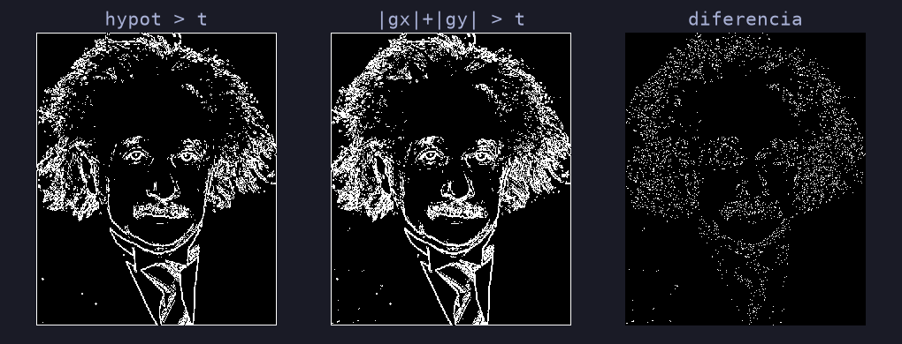
einstein.pgm, mismo umbral absoluto
ejercicio 1 · bAddNoise
Sobel no filtra el ruido
Umbral 0,05 × máx.: 2 004 píxeles de borde sin ruido y 12 310 con ruido gaussiano de σ = 5, casi todos falsos bordes en zonas planas.
En una zona plana, \(g_x\) y \(g_y\) son ruido de desviación 17,3 y la magnitud sigue una Rayleigh con mediana \(\approx1{,}18\cdot17{,}3\approx20\) (medida: 20,9), un valor que ya supera pronto un umbral de 32.
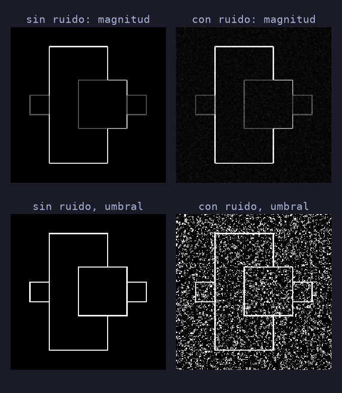
cuadros.png, resultado real
ejercicio 1 · cómo se extiende la imagen
mode de sobel()
| mode | extensión de [a b c d] | con [1 2 3 4] | qué hace |
|---|---|---|---|
'reflect' (defecto) | d c b a | a b c d | d c b a | 4 3 2 1 | 1 2 3 4 | 4 3 2 1 | refleja repitiendo el píxel de borde |
'constant' | k k k k | a b c d | k k k k | 0 0 0 0 | 1 2 3 4 | 0 0 0 0 | rellena con cval (0 por defecto) |
'nearest' | a a a a | a b c d | d d d d | 1 1 1 1 | 1 2 3 4 | 4 4 4 4 | repite el píxel de borde |
'mirror' | d c b | a b c d | c b a | 4 3 2 | 1 2 3 4 | 3 2 1 | refleja sin repetir el borde |
'wrap' | a b c d | a b c d | a b c d | 1 2 3 4 | 1 2 3 4 | 1 2 3 4 | periódica (como la DFT) |
ejercicio 4.1 · convolve frente a sobel
Sobel con convolve
kx = np.array([[-1, 0, 1],
[-2, 0, 2],
[-1, 0, 1]])
f = im.astype(float)
a = sobel(f, 1)
b = convolve(f, kx) # scipy.ndimage
np.abs(a - b).max() # 1200.0
np.abs(a + b).max() # 0.0
np.abs(a - convolve(f, kx[::-1, ::-1])).max() # 0.0
sobel(im, 1).dtype # uint8
| comparación (cuadros) | máx. |dif.| |
|---|---|
| sobel vs correlate(Kx) | 0: igual |
| sobel vs convolve(Kx) | 1200: signo |
| sobel vs convolve(Kx girado) | 0: igual |
| sobel(uint8) vs sobel(float) | 768: desborda |
float son idénticos o de signo opuesto; con uint8, no.bloque c · sección 2 y ejercicio 4.2
Canny
feature.canny, el papel de σ, los dos umbrales de la histéresis y el emparejamiento de la figura 1.
testCanny
Ficha: feature.canny
| image | array 2D en gris (no admite enteros de 64 bits) |
| sigma | σ de la gaussiana inicial; mayor ⇒ menos detalle y menos ruido |
| low_threshold | Tlow de la histéresis; en el código, 0.2*255 |
| high_threshold | Thigh; en el código, 0.25*255 |
| use_quantiles | False: umbrales en la escala de la imagen. True: fracciones 0-1 del histograma del gradiente |
| devuelve | array booleano del mismo tamaño (True = borde) |
Las 4 etapas:
- suavizado gaussiano (σ)
- gradiente: módulo y dirección
- supresión de no máximos (bordes de 1 píxel)
- umbralización por histéresis
uint8 son 51 y 63,75 sobre 255; en una imagen float en [0, 1] serían absolutos (0,2 y 0,25). Con None valen 0,1 y 0,2 de esa escala.sección 2 del enunciado · sigma
Sigma 1, 3 y 5 en cuadros
No, no es el mismo σ.
- σ = 1: encuentra los 4 contornos (1 520 px), pero con ruido el borde se vuelve irregular.
- σ = 3 y 5: bordes más suaves y esquinas redondeadas; se pierden los rectángulos tenues (779 y 709 px).
- Con ruido hay que subir σ: la gaussiana promedia el ruido y estabiliza el borde.
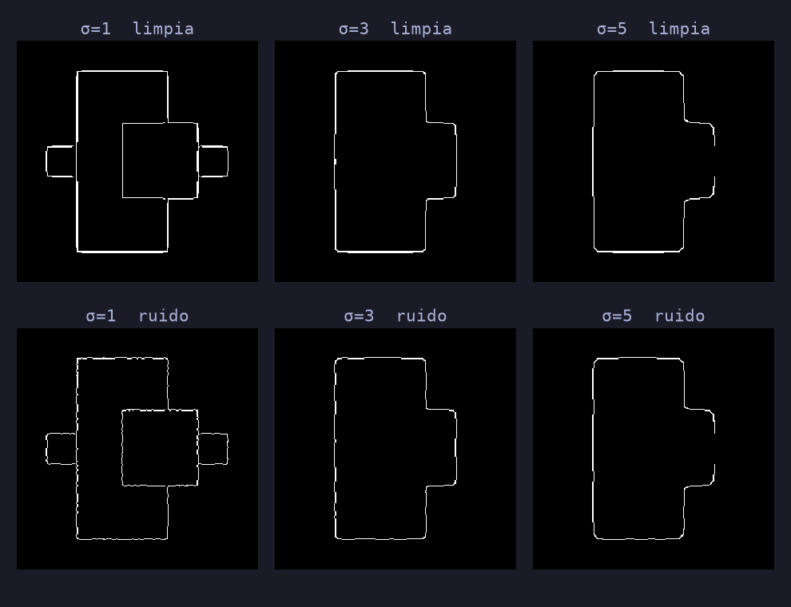
umbrales del código (51 y 63,75). Fila superior: limpia; inferior: ruido σ = 5
sección 2 del enunciado · imagen con textura
Sigma y detalle en einstein
| sigma | limpia | con ruido |
|---|---|---|
| 1 | 20 447 px | 20 877 px |
| 3 | 4 309 px | 4 366 px |
| 5 | 1 658 px | 1 663 px |
El número de bordes cae de golpe con σ: de 20 mil a menos de 2 mil píxeles. El pelo, que es textura fina, desaparece primero; quedan el contorno de la cara y los hombros.
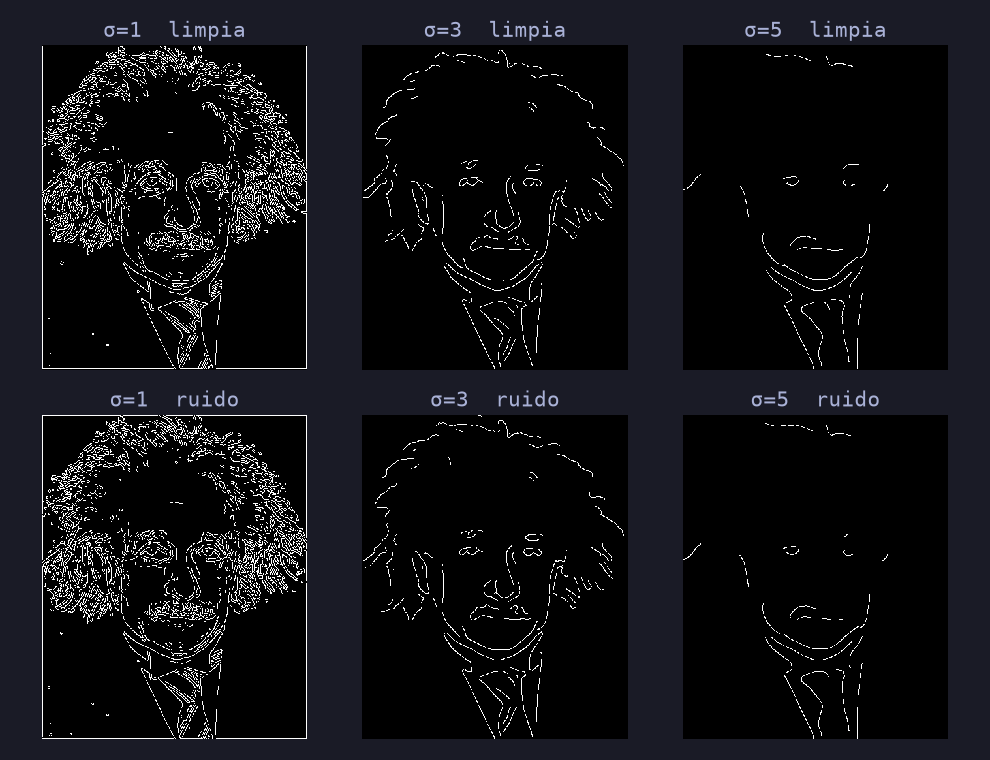
einstein.pgm, mismos umbrales. Arriba: limpia; abajo: ruido σ = 5
sección 2 del enunciado · cómo decide la histéresis
Histéresis en 1D
Con un solo umbral de 0,6 quedaría solo x ≈ 3,2–5,5: el borde saldría a trozos.
sección 2 del enunciado · histéresis
Los umbrales T_low y T_high
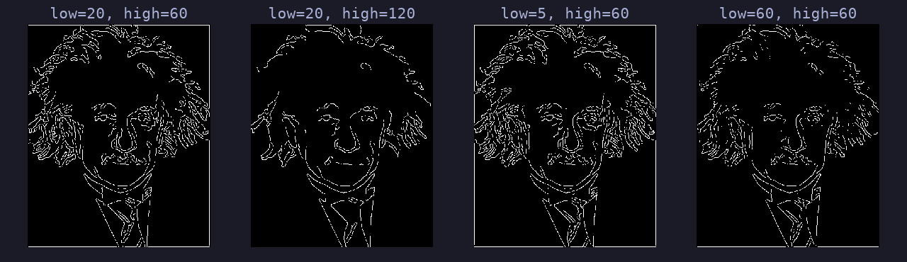
einstein.pgm, σ = 2. De izquierda a derecha: 12 606, 6 163, 13 053 y 7 560 píxeles
Subir Thigh (20, 60 → 20, 120): menos semillas y menos bordes (12 606 → 6 163). Bajar Tlow (20 → 5): los bordes se alargan más (13 053). Con Tlow = Thigh no hay histéresis y los bordes se fragmentan (7 560).
ejercicio 4.2 · tabla 1 y figura 1
Reproducimos la figura 1
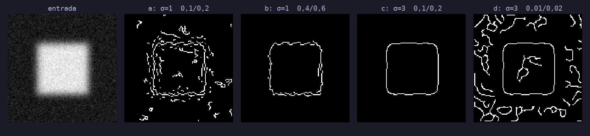
imagen sintética 128×128 en [0, 1] (cuadrado borroso + ruido), de ejemplo; no es la del enunciado
| a | b | c | d | |
|---|---|---|---|---|
| σ, T1, T2 | 1; 0,1; 0,2 | 1; 0,4; 0,6 | 3; 0,1; 0,2 | 3; 0,01; 0,02 |
| píxeles de borde | 841 | 290 | 232 | 1 311 |
ejercicio 4.2 · emparejamiento razonado
1 = c, 2 = a, 3 = b, 4 = d
| salida | combinación | argumento |
|---|---|---|
| 1 | c: σ = 3; 0,1; 0,2 | contorno limpio y de esquinas redondeadas, sin ruido: σ grande filtra el ruido y los umbrales medios dejan solo el borde fuerte |
| 2 | a: σ = 1; 0,1; 0,2 | muchos fragmentos finos de ruido por todo el fondo: σ pequeño no lo filtra y los umbrales medios aceptan parte de él |
| 3 | b: σ = 1; 0,4; 0,6 | solo borde del cuadrado, irregular y entrecortado: los umbrales altos eliminan casi todo el ruido pero σ = 1 deja el contorno rugoso |
| 4 | d: σ = 3; 0,01; 0,02 | manchas largas y suaves (σ = 3) por todas partes, incluso dentro del cuadrado: umbrales casi nulos aceptan cualquier máximo local |
pregunta de examen probable
Sigma 0 y umbrales cruzados
| llamada | qué ocurre (comprobado en skimage 0.26) |
|---|---|
canny(im, sigma=0, ...) | funciona: la gaussiana no suaviza nada y salen muchos bordes de ruido |
canny(im, sigma=-1, ...) | ValueError: «Sigma values less than zero are not valid» |
low_threshold=100, high_threshold=50 | ValueError: «low_threshold should be lower then high_threshold» (la errata «then» es de la biblioteca) |
low_threshold == high_threshold | permitido: sin histéresis, los bordes se fragmentan |
low_threshold=None, high_threshold=None | 0,1 y 0,2 de la escala del dtype: en una imagen float en [0, 255] pasa casi todo |
bloque d · sección 3 y ejercicios 3 y 5
Transformada de Hough
hough_line, el acumulador H, hough_line_peaks, el efecto de girar la imagen y cómo dibujar las rectas.
testHough · pregunta 1 del enunciado
Ficha: hough_line
| image | imagen binaria 2D (los bordes de Canny); lo no nulo vota |
| theta | ángulos en radianes. Defecto: 180 entre −π/2 y π/2. El lab pasa np.linspace(-np.pi/2, np.pi/2, 200) |
| H | acumulador, enteros, forma (len(rhos), len(thetas)) |
| thetas | los ángulos usados |
| rhos | distancias en píxeles, de −diagonal a +diagonal, paso 1 |
Cada píxel de borde vota por todas las rectas que pasan por él:
con x = columna e y = fila. Se llama como el código del profesor:
H, thetas, rhos = hough_line(edges,
np.linspace(-np.pi/2, np.pi/2, 200))
de la imagen al espacio (θ, ρ) · de ejemplo
Puntos alineados se cortan
Cada punto \((x, y)\) de borde vota por la curva
Los tres puntos están en la recta \(x+y=100\).
pregunta 2 del enunciado · variable H
¿Qué tamaño tiene H?
H.shape = (727, 200): 727 distancias × 200 ángulos. La variable es H en testHough.# salida real de testHough: angles: 200, distances: 727 rho[...] [-363. -362. -361. -360. -359.] [ 359. 360. 361. 362. 363.]
pregunta 3 del enunciado · figura mostrada
Ejes y rasgos de H
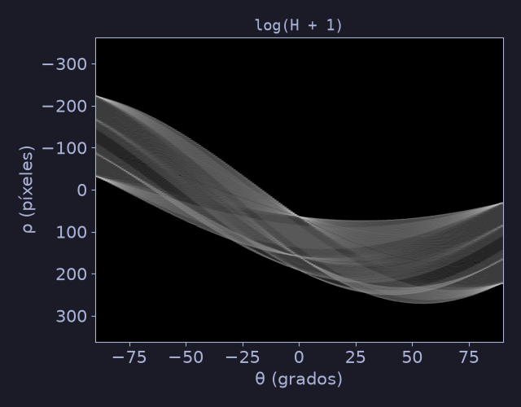
np.log(H + 1) de cuadros (σ = 5)
- Horizontal: θ, de −90° a 90° (200 columnas). Vertical: ρ, de −363 a 363 px.
- Cada celda = número de píxeles de borde sobre la recta \(x\cos\theta+y\sin\theta=\rho\) (votos). Máximo aquí: 104.
- Se muestra \(\log(H+1)\): el 90 % de las celdas vale 4 o menos y unos pocos picos llegan a 104.
Sinusoides: cada píxel traza una. Picos: donde se cruzan muchas (una recta). Mariposas: los votos se reparten alrededor del pico cuando el borde no es perfectamente recto.
findPeaks · pregunta 3 del enunciado
Ficha: hough_line_peaks
| hspace, angles, dists | lo que devuelve hough_line: H, thetas, rhos |
| min_distance | separación mínima entre picos en celdas de ρ (aquí 15 ⇒ 15 px) |
| min_angle | separación mínima en celdas de θ (aquí 20 ⇒ unos 18°) |
| threshold | valor mínimo del pico; defecto 0,5·máx. Aquí 0.15*np.max(H) |
| num_peaks | máximo de picos; el código usa np.inf |
| devuelve | tupla (valores, ángulos, distancias) |
v, ang, dist = hough_line_peaks(
H, thetas, rhos, num_peaks=np.inf,
threshold=0.15 * np.max(H),
min_angle=20, min_distance=15)
min_distance y min_angle: los vecinos de un pico mayor se descartan.visualPercepUtils · pregunta 4 del enunciado
Dibujar los picos sobre H
slope = nThetas / rangeThetas # columnas por radián
plt.imshow(h, cmap='jet')
plt.plot(slope*(angle - theta[0]) + 1,
dist - rho[0],
'rs', markersize=0.1*peak)
- Columna = \((\theta-\theta_0)\cdot\text{slope}\): de ángulo a índice.
- Fila = \(\rho-\rho_0\) (paso 1, \(\rho_0=-363\)).
- Tamaño del marcador ∝ valor del pico.
| valor | ángulo | distancia |
|---|---|---|
| 104 | −0,5° | 62 |
| 88 | 90° | 223 |
| 88 | 90° | 32 |
| 65 | 0,5° | 161 |
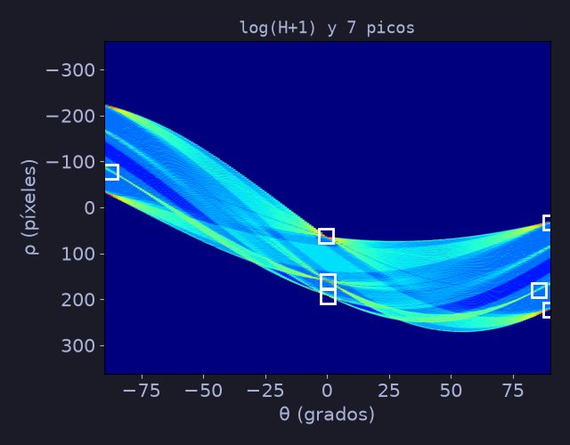
7 picos (primeros 4 en la tabla)
ejercicio 3 · bRotate
Rotar la imagen y los picos
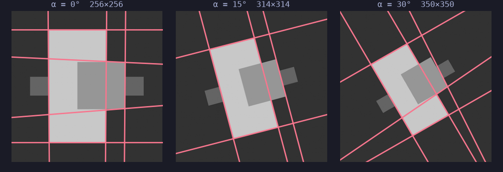
sin ruido; σ = 5; rectas detectadas en rojo
| giro | tamaño | picos | ángulos de los picos principales |
|---|---|---|---|
| 0° | 256×256 | 7 | ≈ 0° y 90° |
| 15° | 314×314 | 5 | −14,9° y 75,5° (= 90° − 15°) |
| 30° | 350×350 | 6 | −30,3° y 60,2° (= 90° − 30°) |
Con ndi.rotate(im, α), cada ángulo pasa de θ a θ − α (signo comprobado; eje y hacia abajo). El nº de picos cambia: la imagen crece (reshape) y los lados giran, así que el borde se escalona y reparte sus votos.
ejercicio 5 · código completo
displayLines(im, thetas, rhos)
def displayLines(im, thetas, rhos):
Hh, Ww = im.shape[:2]
plt.imshow(im, cmap='gray')
for t, r in zip(thetas, rhos):
if abs(np.sin(t)) > 1e-6: # no vertical
x1, x2 = 0, Ww
y1 = (r - x1*np.cos(t)) / np.sin(t)
y2 = (r - x2*np.cos(t)) / np.sin(t)
else: # vertical
x1 = x2 = r / np.cos(t)
y1, y2 = 0, Hh
plt.plot((x1, x2), (y1, y2), '-r')
plt.xlim(0, Ww); plt.ylim(Hh, 0)
plt.axis('off')
plt.plot recibe primero las dos x y luego las dos y. Con imshow el eje y va hacia abajo, de ahí ylim(Hh, 0).ejercicio 5 · resultado real
Rectas sobre cuadros
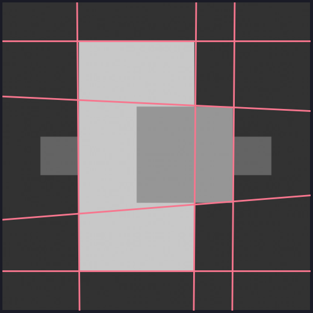
7 picos de H ⇒ 7 rectas
Los dos picos de θ ≈ 0° (ρ = 62 y 161) son las rectas verticales de los lados del rectángulo claro, y los de θ = 90° (ρ = 32 y 223), las horizontales.
Las rectas son infinitas: cruzan toda la imagen aunque el borde real solo ocupe un tramo.
Los picos menores (26, 23 y 22 votos) salen de los lados escalonados de los rectángulos pequeños y son ligeras desviaciones de las rectas principales.
displayLines(im, peaks_thetas, peaks_rhos) con lo que devuelve hough_line_peaks (ángulos y distancias, en ese orden).bloque e · ejercicios 4 y 6 y repaso
HOG, segmentos y examen
Histograma de orientaciones, de rectas a segmentos, tres ejercicios resueltos, verdadero o falso y la chuleta.
ejercicio 4 · HOG(im, nbins)
Histograma de orientaciones
def HOG(im, nbins):
im = im.astype(float)
gx = sobel(im, 1)
gy = sobel(im, 0)
mag = np.hypot(gx, gy)
ang = np.arctan2(gy, gx)
h, _ = np.histogram(ang, bins=nbins,
range=(-np.pi, np.pi), weights=mag)
return h
Sin pesos cada píxel cuenta 1: en cuadros, 63 532 de 65 536 píxeles son planos (\(g=0\)), arctan2(0,0)=0 y casi todo cae en la barra de 0°. Con pesos = magnitud, solo cuentan los bordes.
ejercicio 6 · avanzado
De rectas a segmentos
Idea 1. Recorrer la recta \((\theta,\rho)\) píxel a píxel sobre el mapa de bordes y quedarse con los tramos de píxeles de borde, tolerando huecos pequeños (gap) y descartando los tramos cortos.
Idea 2. Usar la versión probabilística de Hough, que ya devuelve segmentos:
segs = probabilistic_hough_line(
edges, threshold=5,
line_length=50, line_gap=5)
# lista de ((x0, y0), (x1, y1))
Con cuadros salen 7 segmentos, sobre todo los lados largos del rectángulo claro.
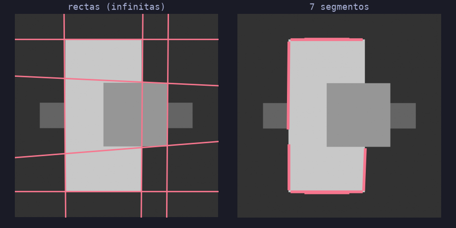
izquierda: rectas infinitas; derecha: segmentos
tipo examen · ejercicios 1 y 2 con solución
edges_sobel y orientation_hist
1. Escribe edges_sobel(im, t): mapa binario de bordes con la magnitud del gradiente de Sobel y umbral relativo t (0 a 1).
def edges_sobel(im, t):
im = im.astype(float)
gx = sobel(im, 1)
gy = sobel(im, 0)
mag = np.hypot(gx, gy)
return mag > t * mag.max()
astype(float) con una imagen uint8.2. Escribe orientation_hist(im, n): histograma de n bins de las orientaciones del gradiente, ponderado por la magnitud.
def orientation_hist(im, n):
im = im.astype(float)
gx = sobel(im, 1)
gy = sobel(im, 0)
mag = np.hypot(gx, gy)
ang = np.arctan2(gy, gx)
h, _ = np.histogram(ang, bins=n,
range=(-np.pi, np.pi), weights=mag)
return h
arctan2(gx, gy) al revés, o no pasar range ni weights.tipo examen · ejercicio 3 con solución
¿Cuántas rectas hay?
3. Dado un mapa binario de bordes edges, devuelve cuántas rectas detecta Hough con al menos la mitad de los votos del pico máximo.
def n_lines(edges, frac=0.5):
th = np.linspace(-np.pi/2, np.pi/2, 180,
endpoint=False)
H, thetas, rhos = hough_line(edges, th)
v, a, d = hough_line_peaks(
H, thetas, rhos,
threshold=frac * H.max(),
min_angle=10, min_distance=10)
return len(v)
n_lines = 4: dos picos en θ = −90° (horizontales, ρ = −10 y −50: con sen θ = −1, ρ = −y) y dos en θ = 0° (verticales, ρ = 10 y 53).len(v). Los lados paralelos comparten θ y difieren en ρ.H.max() (votos) en lugar de len(v) (rectas), o no pasar threshold y quedarse con el defecto de 0,5·máx.tipo examen · tapa la columna derecha
Verdadero o falso (1)
| afirmación | respuesta |
|---|---|
sobel(im, 1) resalta los bordes horizontales. | Falso: deriva en x ⇒ bordes verticales |
Con una imagen uint8, sobel devuelve bien los valores negativos. | Falso: mismo dtype, se envuelven |
convolve(im, Kx) da exactamente lo mismo que sobel(im, 1). | Falso: signo opuesto (sobel correlaciona) |
| \(|g_x|+|g_y|\) nunca es menor que \(\sqrt{g_x^2+g_y^2}\). | Verdadero: hasta √2 mayor |
| En Canny, subir σ aumenta el número de bordes detectados. | Falso: lo reduce (menos detalle y ruido) |
tipo examen · tapa la columna derecha
Verdadero o falso (2)
| afirmación | respuesta |
|---|---|
| Un píxel con magnitud entre Tlow y Thigh siempre es borde. | Falso: solo si está unido a una semilla |
hough_line espera una imagen binaria de bordes, no la imagen en gris. | Verdadero: lo no nulo vota |
El tamaño de H depende del número de píxeles de borde. | Falso: de la diagonal y de len(theta) |
hough_line_peaks devuelve (ángulos, distancias). | Falso: (valores, ángulos, distancias) |
| Girar la imagen α grados desplaza los picos de H en θ. | Verdadero: θ pasa a θ − α (y ρ cambia) |
resumen para repasar
Chuleta: funciones del lab
| función | parámetros clave | devuelve |
|---|---|---|
scipy.ndimage.sobel | input, axis (1 = x, 0 = y), mode='reflect' | derivada con signo, mismo dtype que la entrada |
skimage.feature.canny | sigma, low_threshold, high_threshold, use_quantiles | array booleano de bordes |
transform.hough_line | image binaria, theta (rad) | (H, thetas, rhos); H de forma (nρ, nθ) |
transform.hough_line_peaks | H, thetas, rhos, threshold, min_angle, min_distance, num_peaks | (valores, ángulos, distancias) |
ndi.rotate | input, angle (grados), reshape=True, mode | imagen girada (más grande con reshape) |
np.hypot / np.arctan2 | (gx, gy) / (gy, gx) | módulo ≥ 0 / ángulo en (−π, π] |
np.histogram | a, bins, range, weights | (cuentas, bordes) |
probabilistic_hough_line | image, threshold, line_length, line_gap | lista de segmentos ((x0,y0),(x1,y1)) |
Recta de Hough: \(x\cos\theta+y\sin\theta=\rho\) | \(\text{len(rhos)}=2\lceil D\rceil+1\) | rotar α ⇒ θ pasa a θ − α